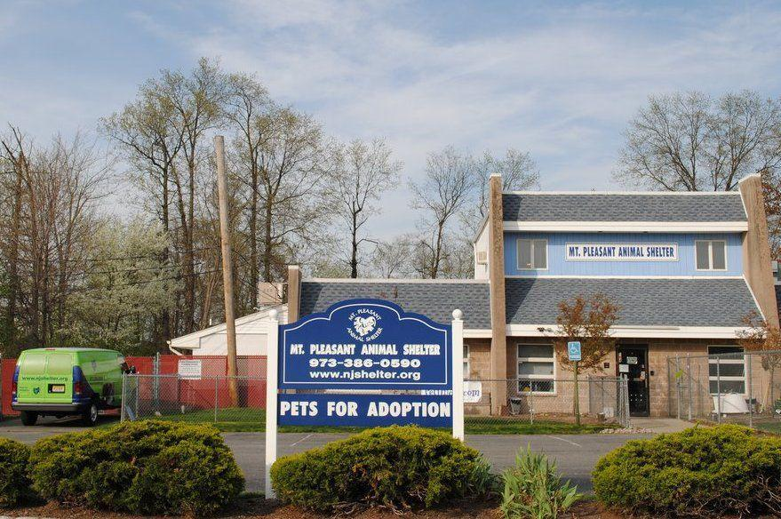

About Us
The Mt. Pleasant Animal Shelter is a city operated facility with one full time director, 1 full time animal control officer, one part time animal control officer and many dedicated volunteers. We take in stray, abandoned, injured, and homeless dogs that are within the city limits of Mt. Pleasant. We are unable to take in cats unless they are injured or un able to care for them selves, such as un-weaned, and motherless kittens. Unfortunately, there is no state law or city ordinance against cats running at large at this time. Our animal control officers are responsible for responding to calls for service relating to dogs at large, dog bites, and animal cruelty. Pet owners, please don’t let your dogs roam at large at any time and keep a collar with a current rabies tag on them at all times. Provide your pet with access to food, water, adequate shelter, and vet care, if needed, at all times. This is a state law and a city ordinance. We will issue citations for these violations starting at $193.00. Please be a responsible pet owner. Dogs and cats already spayed or neutered at the time of adoption will have an adoption fee of $75 and can go home the same day. Dogs and cats that are not spayed or neutered at the time of adoption will have an adoption fee of $25 . Those animals will then be made a spay or neuter appointment at one of our local vets. We will take them to your choice of local vet and you will be responsible for picking up your new pet and paying for their spay or neuter fee to the vet.
Mission Statement
- To engage the hearts, hands and minds of Mt. Pleasant to help abandoned, lost, and stray animals.
- To educate the community in the humane treatment of animals.
- To help Mt. Pleasant Animal Services maintain a low euthanasia facility through mandatory sterilization of all animals before placement.
- To promote financial support and volunteerism.
- To ensure that everybody understands that: “Everything we do is for the animals."